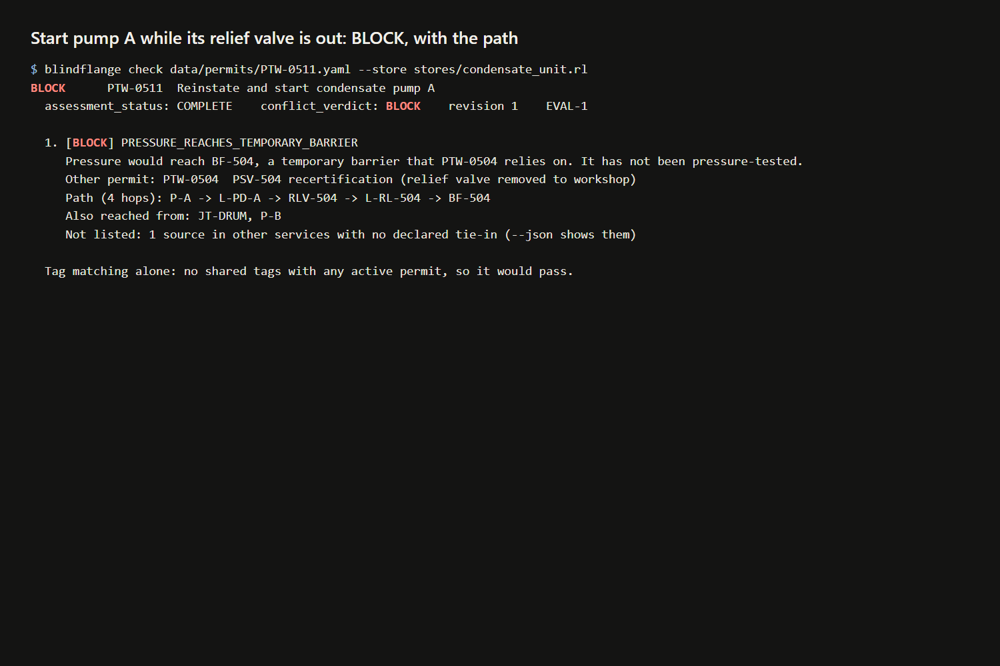

03 · The answer
Block, clear, or I don't know
i.BLOCK
Starting pump A would put pressure on a temporary blind another permit relies on. Four hops. No shared tag.
ii.CLEAR
Close one valve on that path, RLV-504, and the same request is clear.
iii.INCOMPLETE
Lose track of that valve's state and there is no verdict. The unconfirmed valve is named.
